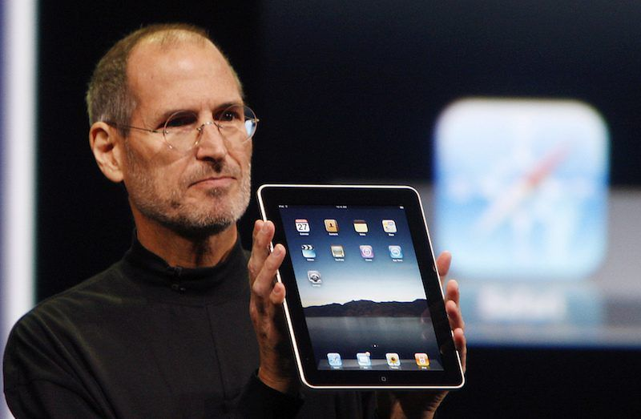

Steve Jobs
Steve Jobs holding up the new iPad in January 27, 2010 in San Francisco, California.
Here's a time-line of Steve Job's life:
- 1955 - Steve Jobs was born February 24, 1955, in San Francisco, California, and was adopted by Paul and Clara Jobs.
- 1976 - Jobs and Wozniak formed their own company. They called it Apple Computer Company.
- 1985 - Jobs resigns from Apple and later found NeXT Inc. with some of his former employees.
- 1997 - Apple buy NeXT for $427 million, bringing Jobs back to the company he had cofounded.
- 24 aug, 2011 - Jobs announce his resignation as CEO of Apple. Tim Cook becomes his successor.
- 5 oct, 2011 - Jobs died at his Palo Alto home.